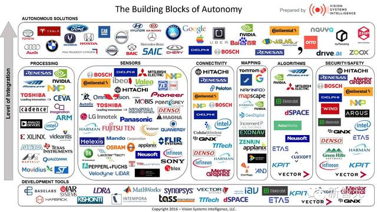
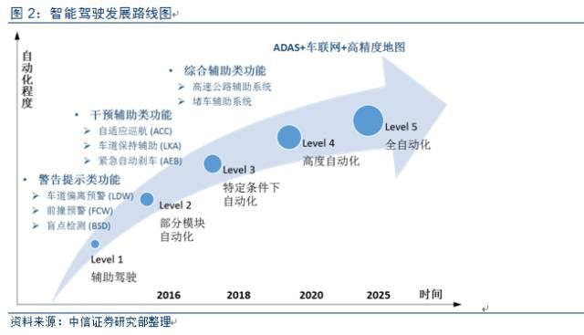
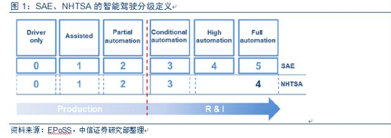
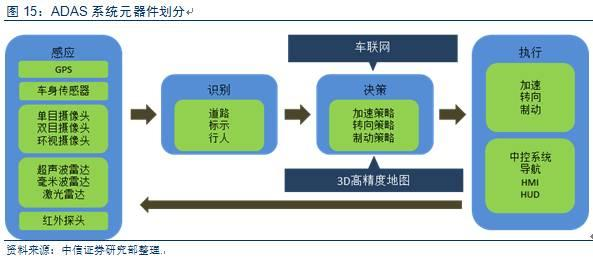
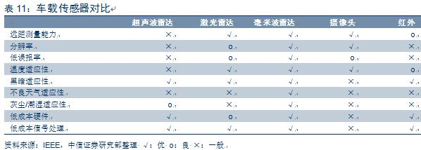
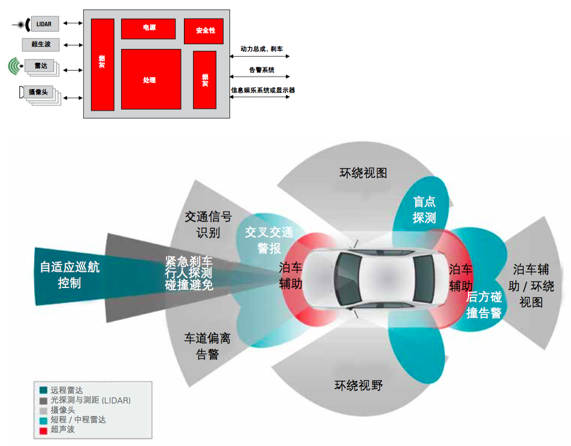
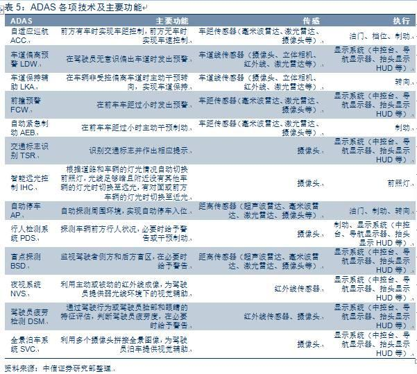

关于高级辅助驾驶系统 ADAS
感知、高精地图和驾驶决策是自动驾驶的三大支柱。需技术、立法、产业化同时推动。
2016 版图
技术研究公司 VSI（Vision Systems Intelligence）发布的自动驾驶产业布局图。
)
{kind=link}
厂商

各类企业优势：
- 科技型公司，数据融合、高精度地图技术优势，吸引消费者和资本市场关注；
- 传统车企（OEM），掌握汽车生产资质和整车控制集成的核心竞争力，保留全产业链优势；
- ADAS供应商，掌握感知识别算法，为车企和科技型公司提供ADAS系统解决方案；
- 底层零部件供应商，如雷达、摄像头、芯片、电子刹车等。
代表
科技型公司
特斯拉、谷歌、苹果、BAT、Uber
传统车企（OEM）
- 奥迪、宝马、奔驰、沃尔沃、丰田、马自达、福特等
通用、菲亚特克莱斯勒、本田、日产、三菱、富士重工业、现代、起亚、戴姆勒、大众、保时捷、玛莎拉蒂、捷豹路虎、特斯拉
长安 智能互联 SUV CS95，上汽 智能互联 SUV RX5、智能驾驶汽车 MG iGS
ADAS供应商
Bosch、AutonomousStaff、Autoliy
和谐富腾、小鹏、蔚来、智车优行、乐视
底层零部件供应商
传感层：
- 摄像头：Omni、PointGrey、大恒和微视
- 雷达：Bosch、Denso、Delphi、博世、大陆、德尔福、电装、Velodyne、IBEO
控制层：
- 芯片／软件：Mobileye、TI（德州仪器）、ADI、东芝、ST、飞思卡尔、NVIDIA
- 集成控制：博世、大陆、德尔福、电装、Mobileye
机器视觉算法：中科慧眼、地平线、东软和Minieye
高精地图：HERE、TOMTOM、RoadDNA、RoadBook、百度、高德、四维图新、武汉光庭
执行层
- ESP/AEB/ABS等：博世、大陆、德尔福、电装
市场进度
模块化 ADAS 是传统汽车向无人驾驶进发的重要方式。

责权问题
智能驾驶按照汽车控制权及安全责任分配可分为不同级别。
美国机构有：国际自动机械工程师学会（SAE）、 美国国家公路交通安全管理局（NHTSA）和美国高速研究所（BASt）；中国机构 C-NCAP。

根据国际自动机械工程师学会（SAE）来分：
| 级别 | ||
|---|---|---|
| 0 | 完全手动驾驶 | |
| 1 | 辅助驾驶（警告提示类） | 车道偏离预警LDW、前撞预警FCW、后视系统RVS、行人监测系统PDS、盲点监测BSD、环视系统SVC、交通标示识别TSR等 |
| 2 | 部分模块自动化（干预辅助类） | 自适应巡航ACC、车道保持辅助LKA、紧急自动刹车AEB、智能远光灯IHC、自动泊车AP等 |
| 3 | 特定条件下自动化（综合功能） | 丰田的公路自动驾驶辅助AHAC、特斯拉的自动巡航Autopilot、通用的Super Cruise |
| 4 | 高度自动化 | 奔驰概念车 F015 Luxuryin Motion，配备车联网、行人检测、自动紧急制动等功能 |
| 5 | 全自动化的无人驾驶 |
元器件
感知识别（主要为摄像头和雷达）和高精度地图系统。

关键技术
ADAS技术基础是计算机视觉。
行动层
- 转向、油门和制动三大控制器（及执行机构）：根据ECU输出讯号，让汽车完成动作之行
感知层
- 联网：车辆间以及车辆与基础设施间的互联网连接（数据云）
- 地图：存储和更新地理及基础设施信息
- 处理器（ECU/MCU）：处理决策所需的数据
- 感知单元：感知外部数据。包括毫米波雷达、激光雷达、摄像头、超声波雷达等
- 执行机构：根据计算结果快速动作。包括制动系统等
认知层
认知层主要是智能决策和规划，难点在于：对环境的准确理解、对下一步决策的准确判断、选择合理的路径达到目标。
- 程序算法：深度学习，计算机视觉和深度神经网络（DNN）管道
- 电子控制单元（ECU）
感知单元
雷达和摄像头会成为传感器主流，呈现多传感器融合趋势。

基于摄像头的系统
单车保守用4个镜头（前置摄像＋两侧盲点监测＋后侧倒车影像）
使用范围：后备摄像头和环视系统等，驾驶员瞌睡告警、车道偏离告警和碰撞避免。
| 位置 | 应用 | |
|---|---|---|
| 单目摄像头 | 前挡风玻璃上部 | 自适应巡航、车道偏离预警、前撞预警、行人监测 |
| 后视摄像头 | 车尾 | 倒车可视系统 |
| 立体摄像头（双目摄像头） | ||
| 环视摄像头 | 一般至少四个，分贝安装在车前后左右 | 自动泊车、全景泊车 |
基于雷达的系统
目前主流车载传感器包括超声波雷达、激光雷达、毫米波雷达等
| 位置 | 应用 | |
|---|---|---|
| 远程雷达系统（77GHz） | 一般安装在车辆前部，侦测正前方。探测距离超过 100 米 | 车辆测距。通常用于自适应巡航控制、刹车辅助和碰撞告警 |
| 中程／近程雷达系统（24GHz） | 短距车载雷达业务。盲点检测、侧面碰撞告警、两侧来车告警和变道辅助 | |
| 光探测和测距（LIDAR） | 自适应巡航控制、事故避让与缓解以及目标探测。它对自主驾驶功能十分重要 | |
| 超声波雷达 | 用于泊车辅助已达到很高成熟度并为市场所广泛接受。片上系统是超声波传感器优选解决方案。 | |
| 毫米波雷达 | 一般多个雷达组合 | 车在距离探测，如自适应巡航、碰撞预警、盲区探测等 |
| 激光雷达 | 实施环境感知，三维建模 |
传感器融合

